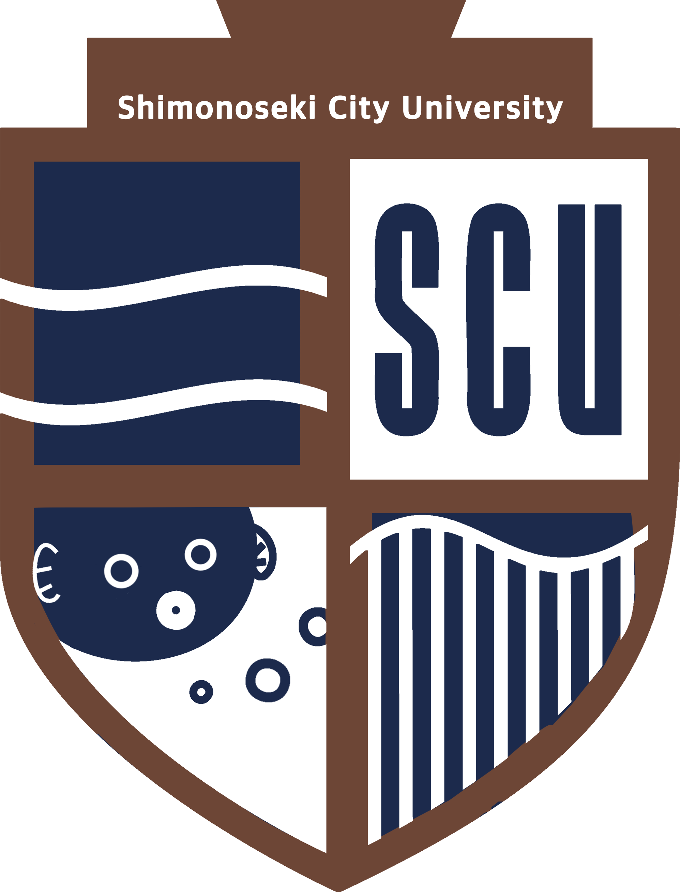

「仕組み」と「根拠」から考える進路選択
下関市立大学 データサイエンス学部 教授 白濵 成希

どちらが優れているかではなく、自分は何に取り組みたいかを考えます。
学校食堂の混雑を減らすとしたら……
画面、保存、通信、安全性を考えて、実際に動く仕組みにする
いつ、なぜ混むのかを調べ、効果のありそうな対策を考える
近い方に挙手してください。迷った人、両方の人も大歓迎です。
大学では、入口をより深く、体系的に学びます。
出典：文部科学省「高等学校情報科『情報I』『情報II』」
情報工学
仕組みを
つくる
正しく・速く・安全に・使える形で
データサイエンス
データから
根拠をつくる
どこまでが確かなのか考え、判断へ
整理：調査レポート第1章・第3章
出典：日本学術会議「情報学分野」(2016)、情報処理学会「DSカリキュラム標準」(2021)
対象：アルゴリズム、ソフトウェア、OS、ネットワーク、DB、セキュリティ、ロボットなど
出典：情報処理学会「カリキュラム標準J17」、ACMほか「CS2023」
成功とは「動く」だけでなく、信頼して使い続けられること。
成果：分析、モデル、予測、可視化、評価、提案、施策
出典：情報処理学会「DSカリキュラム標準」(2021)、厚生労働省 job tag
数字があることと、結論が正しいことは同じではありません。
境界は一本の線ではなく、工程の中で何度も交差します。
出典：調査レポート第7章、IPA「デジタルスキル標準 ver.2.0」(2026)
人や生成AIが表す「感情」を、どう測り、比べ、解釈するか
よいシステムだけでも、よい分析手法だけでも、
意味のある研究にはなりません。
なくならない。ただし、境界をつなぐ仕事は増える。
AI生成コードの検証／全体設計／テスト／安全性／運用責任
問い・測定の妥当性／データ漏えい／評価／不確実性／公平性
出典：調査レポート第7章、IPA「デジタルスキル標準 ver.2.0」(2026)
どちらの難しさなら「もう少し考えたい」と思えますか？
一行のバグ、部品の接続、性能と安全性の両立
欠けたデータ、曖昧な問い、相関と因果、不確実な結論
「楽そうな方」ではなく、難しくても意味を感じる方を考えます。
中央や境界にいるのも、自然な関心です。
備品貸出Webアプリ
設計やバグ修正が面白い？公開データをグラフ化
予想外の結果を追いたい？混雑予測ダッシュボード
作る・分析する、どちらに時間を使いたい？情報工学の深さ：OS、計算機構成、ネットワーク、セキュリティ、ソフトウェア工学
DSの深さ：確率・統計、回帰、機械学習、調査・実験、領域応用
「AI」「データサイエンス」という名前より、4年間の中身を見る。
情報工学の基礎を使い、データを社会の判断と価値創造へつなげる。
出典：下関市立大学「3つのポリシー」「授業科目表」(2026年8月20日確認)
出典：下関市立大学「データサイエンス学部開設式」(2024)、調査レポート第13章
質問はありますか？
進路の迷いでも、大学での学びでも大丈夫です。
APPENDIX
名称を辞書のように固定せず、各大学の教育内容を確認する。
出典：日本学術会議「情報学分野」(2016)、ACM「CC2020」、情報処理学会
APPENDIX
| 観点 | 情報工学の重心 | データサイエンスの重心 |
|---|---|---|
| 出発点 | 要求、仕様、機能、技術制約 | 問い、仮説、意思決定、データ |
| プログラミング | 対象・主要な成果物 | 分析・検証・自動化の手段 |
| 数学 | 離散、論理、計算量、線形代数等 | 確率、統計、線形代数、最適化等 |
| 典型的評価 | 正しさ、速度、信頼性、安全性 | 妥当性、再現性、汎化、不確実性 |
| 典型的失敗 | 動かない、遅い、壊れる、漏れる | 偏り、過学習、誤解釈、役立たない |
| 成果 | ソフトウェア、システム、基盤 | 分析、モデル、評価、提案 |
出典：調査レポート第6章
APPENDIX
| 学年 | 情報工学系の典型 | データサイエンス系の典型 |
|---|---|---|
| 1年 | 数学、物理、プログラミング、離散数学 | 数学、確率・統計、プログラミング、倫理 |
| 2年 | データ構造、OS、計算機構成、DB、ネットワーク | 数理統計、回帰、データ処理、DB、可視化 |
| 3年 | ソフトウェア工学、セキュリティ、AI、専門実験 | 機械学習、時系列、調査・実験、領域応用 |
| 4年 | 設計・開発、研究室、卒業研究 | 実データプロジェクト、社会実装、卒業研究 |
出典：調査レポート第8章。個別大学の教育課程を示す表ではない。
APPENDIX
出典：調査レポート第7章・第11章
APPENDIX
パンフレットを「読む」から、学びを「質問する」へ。
REFERENCES 1/2
REFERENCES 2/2